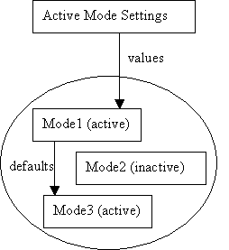

Summary:
The document "User Settings In Eclipse" presented the known scenarios in Eclipse involving the sharing of user settings along with some thoughts on a possible solution. This document outlines a more in-depth proposed solution for meeting the requirements of these scenarios.Last Modified: July 18, 2003
Table of Contents:
Introduction
Settings Node API
Settings Roots and Setting Types
Settings Modes
Default Value Determination
Settings Related Configuration Information
Backwards Compatibility
Relating to the Requirements
Time Table
Currently in Eclipse, there are many settings that are persisted over workbench invocations. Some of these settings are specific to the workspace (e.g. may contain absolute paths to files, etc). while others are independent of the workspace location and are, hence, sharable. It should be possible to store user settings that are not specific to a workspace separate from the workspace, so that they can be used in other workspaces or by other users (see bug 36965).
The document "User Settings In Eclipse" describes the known scenarios involving user settings and presents some ideas on a possible solution. This document contains an in-depth description of a possible solution that was designed based on the scenarios presented in the initial document.
The proposed solution that is outlined in this document consists of the following pieces:
The above are described in more detail in the sections that follow.
The core component of this proposal is the Settings class. The API for this class is derived from the existing settings classes in Eclipse and Java 1.4 Preferences class. Therefore, these classes are summarized before the Settings class is presented.
Currently Eclipse has several mechanisms for persisting and potentially sharing settings. These include:
Although each of these APIs has unique aspects, there is a large degree of commonality. The following lists describes the features of these APIs.
For backwards compatibility reasons, any solution that is proposed for 3.0 must be compatible with the existing mechanisms. In other words, the existing mechanisms must remain but could be reimplemented to make use of new API. It is a requirement that this be possible for Preferences and IPreferenceStore and may be desirable for IMemento and IDialogSettings. It is also desirable that any new API meet the requirements outlined in the known scenarios.
A Preferences API has also been defined as part of Java 1.4. This API has many of the same aspects of the current settings APIs in Eclipse.
Furthermore, the other aspects (lists of nodes, arrays of Strings and defaults) could be built on top of the above mentioned features.
However, there are two aspects of the Java 1.4 API that may not be suitable for use in Eclipse. First of all, there are two setting types hard coded into the API: user and system. The known scenarios in Eclipse have, at least, the additional types workspace and project and potentially others (organization). Also, the Java 1.4 Preferences provide a mechanism for associating preferences with a package by mapping the package name to a path in a preference tree. It is not clear that this is how preferences will be organized in Eclipse. Another complication is that Eclipse currently supports being run on 1.3.1 VMs. Until 1.4 becomes the lowest supported VM, we cannot depend on 1.4 API.
Another aspect of the Java 1.4 Preferences API is that it does not provide the underlying implementation for the in-memory or serialized representations of the preferences. Given that the Java 1.4 API is mostly in-line with what is needed in Eclipse, every effort will be taken to ensure that the API that will be proposed for 3.0 will be compatible with the Java 1.4 API in the sense that, if and when Eclipse moves to Java 1.4, the Java 1.4 Preferences could be made a superclass of the Eclipse preference class (or be supported in some other form).
The Settings API being proposed for 3.0 will not differ greatly from the org.eclipse.core.runtime.Preferences with the addition of the ability to nest preference nodes hierarchically as in the Java 1.4 Preferences API. The main difference will be in how settings are persisted and shared. This will be controlled by the following factors:
To avoid confusion with the existing Eclipse and Java 1.4 Preference
classes, a Settings class will be defined in Eclipse 3.0. The new
class will have many similarities to both of the mentioned preferences classes.
The goal is define a class that can be used to provide the implementation for
both of the existing preferences APIs.
This section outlines the methods that will be part of the Settings
class API.
The Settings class will define methods for the storage and retrieval
of primitive typed properties.
public String getString(String name); public boolean getBoolean(String name); ...//other primitive type gets public void putString(String name, String value); public void putBoolean(String name, boolean value); ...//other primitive type puts public String[] propertyNames(); public boolean remove(String name); public boolean contains(String name);
As in the existing org.eclipse.core.runtime.Preferences class,
the get methods of Settings will return appropriate defaults for
the primitive types if the property does not exist. The next section describes
how explicit defaults can be provided.
Explicit defaults can be provided through specifying another Settings
node that will provide the defaults.
public Settings getDefaultSettings(); public void setDefaultSettings(Settings settings);
If no default settings is provided, the "default" default (as described
in org.eclipse.core.runtime.Preferences) will be used. The following
helper methods will be added to the Settings class to access defaults
so that users of the API will not have to differentiate between when a default
Settings has been assigned using setDefaultSettings().
public String[] defaultPropertyNames(); public boolean isDefault(String name); public String getDefaultString(String name); public boolean getDefaultBoolean(String name); ...//other primitive type get defaults
The propertyNames() method mentioned previously will only return
those properties that have had values assigned to them in the settings node.
An additional keys() method will provide the set of property names
for which values exist in the settings itself or it's default settings.
public String[] keys();
As in the Java 1.4 preferences API, settings nodes can be arranged hierarchically. Each node is identified by a path from a parent node. The path can be provided as either a String or an IPath.
public boolean nodeExists(IPath path); public boolean nodeExists(String path); public Settings getNode(IPath path); public Settings getNode(String path); public String[] childNames(); public String getName(); public Settings getParent(); public IPath getFullPath(); public void removeNode(); public SettingsRoot getRoot();
There will be two types of events: property changes and child changes. Property change events are fired when the value assigned to a property changes. Child change events are triggered when child nodes are added or removed.
public void addPropertyChangeListener(IPropertyChangeListener listener); public void removePropertyChangeListener(IPropertyChangeListener listener); public void addChildChangeListener(IChildChangeListener listener); public void removeChildChangeListener(IChildChangeListener listener);
Methods will be supported to load and save settings.
public void save() throws CoreException; public void load() throws CoreException;
Additionally, a method may be added to synchronize the local copy of the settings with what is serialized. This will be required for situations when multiple running instances of Eclipse share an underlying settings store (such as user settings).
public void syncWithStore() throws CoreException;
Although these methods appear on a Settings node, the task of serializing the
settings is delegated to the SettingsRoot
and SettingsStore.
Import and export of settings will be supported. It should be possible to build an import/export wizard that utilizes setting types to help the user decide what settings to include. Such a UI would be added by a mechanism to associate descriptions with each setting key.
The concept of SettingsRoots is proposed as a way to support the association of settings with different settings scopes. One such scope would be the Eclipse platform itself while another would be projects within an Eclipse workspace.
Within each scope, settings may be sharable in different ways or may be local to a specific workspace. Thus, each property in a Settings node can have a settings type associated with it that indicated whether the settings can be shared and, if it is sharable, how it is shared. A SettingsStore is associated with a settings root and is responsible for mapping settings types into the locations where each setting type is persisted.
The platform settings (i.e. those currently associated with plugins) will be stored in
the PlatformSettingsRoot defined by the org.eclipse.core.runtime plugin.
Other settings
roots, such as the ProjectSettingsRoot will be contributable through
a plugin's manifest file (plugin.xml). An extension point will be added
to the org.eclipse.core.runtime package for defining a settings scope.
<extension-point name="Settings Root" id="settingsRoot"/>
A settings root will be defined by contributing to this extension point.
<extension point="org.eclipse.core.runtime.settingsRoot" id="pluginRoot" name="Settings Root for MyObject">
<settingsRoot
objectClass="org.eclipse.core.runtime.MyObject"
rootClass="org.eclipse.core.runtime.MyObjectSettingsRoot"/>
</extension>
The objectClass defines the class to which the settings root is
associated while the rootClass provides access to the settings
for each instance of the objectClass. The MyObjectSettingsRoot
class needs to extend the SettingsRoot class which is a subclass
of Settings.
public class MyObjectSettingsRoot extends SettingsRoot {
...
}
The following API on the Settings class provides access to the
settings for a particular settings root.
MyObject o = ...; Settings settings = Settings.getSettings(o);
The Settings.getSettings(Object) method uses the settings root
contributed to the settingsRoot extension point for the given object's
class. If there is no settings root defined for the object's class, then the
superclasses of the object's class will be used in order to search for a settings
root. If none is found for any superclasses, null is returned.
Although it would be technically possible to use interfaces as well, this can
lead to non-deterministic behavior in the case where an object
extends a class and implements an interface where both are settings roots.
The PlatformSettingsRoot class needs to extend the SettingsRoot
class which is a subclass of Settings.
public class PlatformSettingsRoot extends SettingsRoot {
...
}
However, the PlatformSettingsRoot is not contributed in XML but
is instead, provided by the org.eclipse.core.runtime plugin. An API
method (getPluginSettings()) will be added to the Plugin
class for implementing the node in the PlatformSettingsTree associated
with a given plugin. In addition to this API, the Plugin class
will implement the ISettingsLocator
interface.
The ProjectSettingsRoot will be contributed by the org.eclipse.core.resources
plugin. Given that settings roots are associated with classes and not interfaces,
the objectClass for the settings root for projects will need to
be the class org.eclipse.core.internal.resources.Project instead
of the interface org.eclipse.core.resources.IProject. The implication
of this is that the following extension contribution must be made by the org.eclipse.core.resources
plugin.
<extension
point="org.eclipse.core.runtime.settingsRoot"
id="projectRoot" name="Plugin Settings Root">
<settingsRoot
objectClass="org.eclipse.core.internal.resources.Project"
rootClass="org.eclipse.core.runtime.ProjectSettingsRoot"/>
</extension>
An additional requirement for the project settings root is that the settings
(and any data stored on disk) for a project need to be removed and when the
project is deleted. The implementation of a ProjectSettingsRoot
will be responsible for listening for project removals and purging any persisted
settings for the project.
Associated with each SettingsRoot is a strategy for mapping setting
types to a storage location. This mapping is handled by a separate SettingsStore
object. A settings store defines which settings types are supported and handles
the serialization of the settings in its associated SettingsRoot.
Setting types for the platform are:
Each setting type will be stored in a separate location. The private and local settings will be stored in the workspace metadata area in the following manner.
The local and private settings are stored separately to allow local settings to be easily differentiated from private settings without special tools that query the setting types defined in Eclipse.
The user and system settings will be stored in location where the settings can be appropriately shared. For instance, user settings will be store in a location relative to the user.home java property.
The applicationId will be an identifier that differentiates applications build using Eclipse. See the section of configuring Eclipse for more details.
The concept of a system setting has been included because it is part of the Java 1.4 API and because we have at least one requirement that mentions such an area. Where this area would live is still to be determined.
Project settings can be private, local or shared. Shared project settings will be persisted within the project. Given this, the project settings store will have the following characteristics:
The private and local settings for projects will be stored in the workspace metadata area in the following structure.
The shared settings will be stored in the project in the following structure.
As mentioned previously, a setting may have a type associated with it that will determine where the setting is persisted and how it is shared. This section is an initial attempt at describing how the setting type for settings could be determined.
The following order will be used when determining the type of a setting in the platform settings.
A plugin can assign, either programmatically or in a configuration file, the settings types of private or system to one or more of its settings. Settings that are marked as private or system by a plugin cannot have their setting type changed. However, settings that are not assigned a type by the plugin can be assigned a type by another source. These settings will use the default setting type which will be user.
Settings that were not assigned a type by the plugin can be assigned a type in the main feature. The main feature can also mark settings as private. This will not be done often but provides a way to correct oversights by the plugin developer (i.e. if the setting causes problems if it is shared).
If a setting was marked as local in the main feature but exists in the user setting location, that setting will be considered a user setting. The reason for this is that the user may have changed the setting type to user in another workspace and would expect that setting to be picked up by other workspaces. The setting type change will be persisted in the workspace where the user made the setting type change.
The following order will be used when determining the type of a setting in a project's settings.
This is basically the same ordering as the platform settings with the exclusion of the main feature. Unassigned settings will default to local and must be explicitly shared.
API will exist on a Settings node for associating a type with a setting.
public String getSettingType(String name); public void setSettingType(String name, String settingType); public String[] propertyNames(String settingType);
Setting types need not be assigned to all properties. Properties that do not
have an assigned type will have the default type assigned to them. The setting
type is used by the SettingsRoot and
SettingsStore to determine how to
persist the setting.
To ease the association of settings with a particular object, the settings
API will provide an ISettingsLocator interface which will support
the following statements for accessing settings.
Settings rootSettings = Settings.getSettingsRoot(myPlugin) Settings repoSettings = rootSettings.getSettings(myRepository);
The provided object need not implement the ISettingsLocator interface
(but can). The platforms IAdaptable mechanism will also be used.
In other words, the provided object must implement IAdaptable and
must adapt to the interface given below. If either of these is not the case,
null will be returned.
public interface ISettingsLocator {
public IPath getSettingsPath(Object object);
}
This interface is designed to allow a single instance to provide the paths
for multiple objects. The returned path will be used to get the Settings node
for the object. The path returned is always relative to a settings root and
the Settings#getSettings(Object) method will always use the root
to find the settings for the object.
One of the requirements identified in the original settings document involved the ability to enable and disable modes that have multiple settings associated with them. To accomplish this, the user will be able to activate one or more modes, which are simply settings nodes themselves.
There will be UI to activate modes. This area will be investigated in more detail during prototyping.
The following diagram illustrates how the active mode settings will be determined from the active modes.

Given that multiple modes can be active at a given time, an ordering is required to determine which value settings have priority. It is planned that the ordering of active modes will be configurable by the user. Each mode will be configured to obtain its defaults from the next lower priority active mode. The Active Mode Settings node that is used to determine the platform settings will obtain its values from the modes.
One special consideration to be made with this arrangement is that, when modes are activated, deactivated or rearranged, value in the Active Mode Settings will change and must result in change notification events. There may be salability issues to consider given the number of settings that could potentially change value at the same time.
The following are the methods being considered for mode specification.
The existence of modes within a plugin will be signaled by contributing to an extension point in the plugin.xml file that indicates that the platform should look in the .modes directory for mode specifications.
The modes.xml file contains a description of the modes defined by this plugin. The settings for each mode are contained in a separate file. A plugin can also contribute to the modes defined by other plugins but can only add settings that apply to itself.
Mode specification is a feature is similar to specifying them in a plugin except that the mode is a directory containing specifications for multiple plugins.
The settings made in a feature would take precedence over those contained in the plugins.
It would also be beneficial for the user to have the ability to import settings and assign them to a mode.
In this section, the strategies for determining the defaults for the platform settings and project settings is presented.
Currently, Eclipse determines the defaults for platform settings by obtaining settings from the following sources in the given priority order:
That is, if a value is assigned to a setting in the plugin_customization.ini file then it is the default (unless it appears in the ini file given on the command line), otherwise a value set in the preferences.ini of the plugin is used if present. If no setting is there, the default specified in the code is used.
This strategy will remain largely unchanged. The same sources will be loaded
into a PlatformDefaultSettingsRoot. This settings node will be
used as the default settings node for the PlatformSettingsRoot
which will result in the same preferences determination strategy that currently
exists in Eclipse. However, settings modes will
also play a role in determining the default values of platform settings, resulting
in the following default determination ordering.
Each project will have a ProjectSettingsRoot associated with it.
Plugins will use the ISettingsLocator
facility to access the plugin's settings node associated with a project. The
code to access the project settings for a plugin would be:
IProject aProject = ...; Plugin aPlugin = ...; SettingsRoot projectSettings = Settings.getSettingsRoot(aProject); Settings pluginProjectSettings = projectSettings.getSettings(aPlugin);
It will be up to the plugin provider to determine how defaults for their project settings are determined. However, a special settings node will be created which supports the specification of settings (inherited from Settings) as well as the specification of a filter which will allow settings defaults to be obtained from the platform settings for the plugin.
The middle settings node in the above diagram can have defaults set directly. Also, it can be provided with a list of property keys for which the defaults should be passed through from the plugin settings. The filter is provided to avoid getting change events for all platform settings when only a small fraction may apply to projects.
It would be beneficial to have an Eclipse configuration file in the main feature that allows the specification of the following information.
In order to support backwards compatibility, the following will be done:
It is not clear if the IMemento should be implemented on top of Settings or not. This will be determined later.
The only requirement mentioned in "User Settings In Eclipse" that is not addressed by this proposal is the scenario for supporting policies for when settings can be changed by the user. This requirement may be addressed in the future.